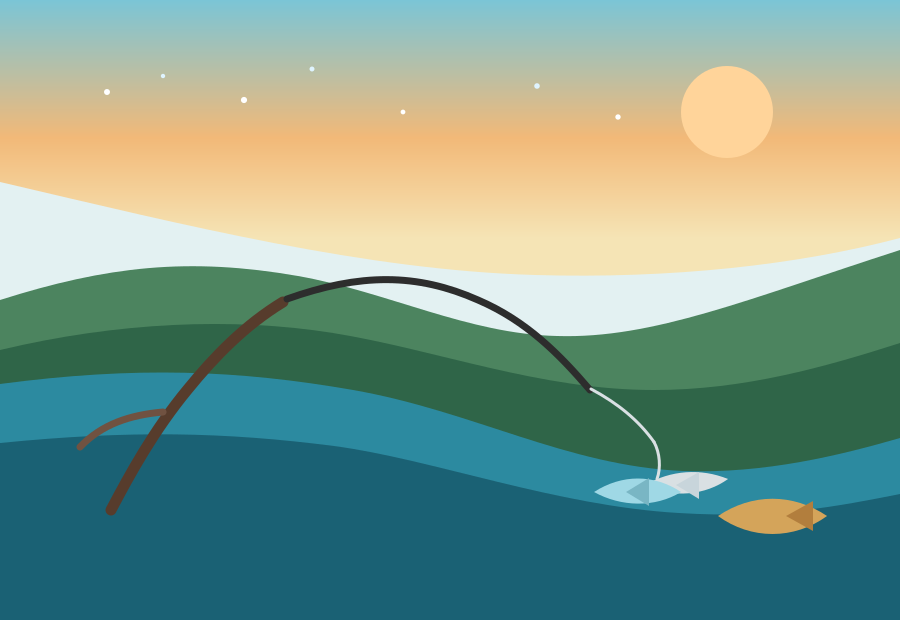

Why I enjoy it
Fishing gives me a chance to slow down, spend time outdoors, and enjoy the Texas places that still feel familiar to me.
Texas fish
Largemouth bass, Guadalupe bass, catfish, crappie, and alligator gar are some of the fish that make Texas freshwater fishing memorable.
Connection to home
I grew up in College Station, Texas, so I wanted this page to keep a clear connection to home.
My ideal fishing routine
- Choose the kind of spot I want for the day.
- Pick a lake, pond, or river access point.
- Think about nearby places such as Lake Somerville or water near the Brazos River.
- Check the weather and water conditions before leaving.
- Bring a simple setup with tackle, water, and patience.
- Spend time watching the water instead of rushing every cast.
- Head home with one memory, one lesson, or one good fish story.

Featured Video
This short fishing video adds motion and energy to the page while matching the Texas fishing theme.
The video is included as part of the overall fish page experience.
Interactive Fish Tableau Graph
This embedded Tableau Public graph focuses on fishing-related data.
Interactive Tableau Public visualization related to fishing and seafood industry data.